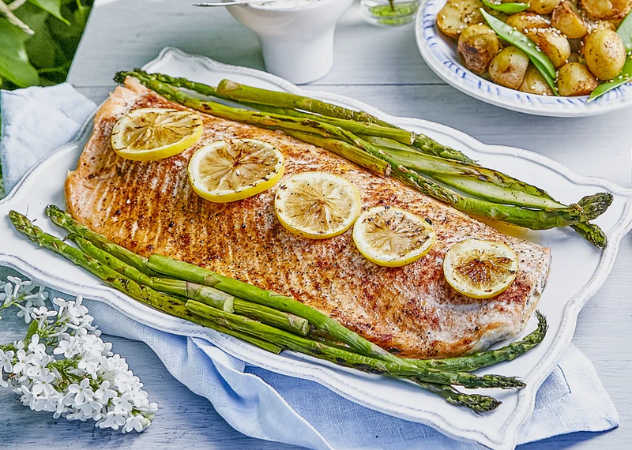

Grilled Salmon

Description
A simple soy sauce and brown sugar marinade, with hints of lemon and
garlic, are the perfect salty-sweet complement to rich salmon fillets.
Ingredients
- Salmon fillets
- Lemon pepper
- Garlic powder
- Salt
- Soy sauce
- Brown sugar
- Oil
Steps
- Season salmon fillets with lemon pepper, garlic powder, and salt.
-
In a small bowl, stir together soy sauce, brown sugar, water, and
vegetable oil until sugar is dissolved. Place fish in a large resealable
plastic bag with the soy sauce mixture, seal, and turn to coat.
Refrigerate for at least 2 hours
- Preheat grill for medium heat.
-
Lightly oil grill grate. Place salmon on the preheated grill, and
discard marinade. Cook salmon for 6 to 8 minutes per side, or until the
fish flakes easily with a fork.